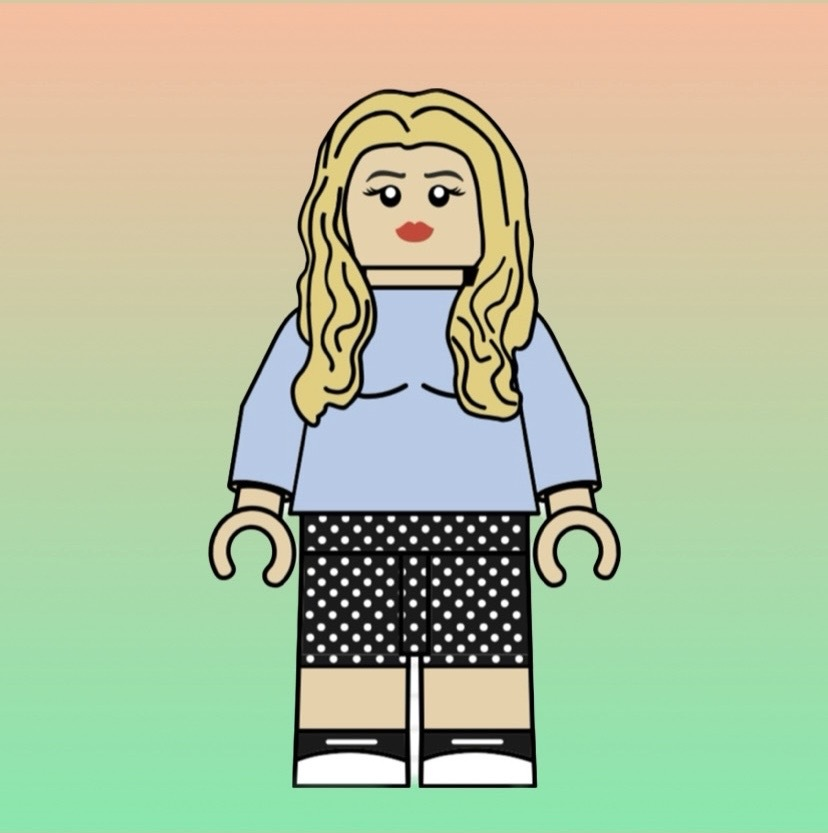
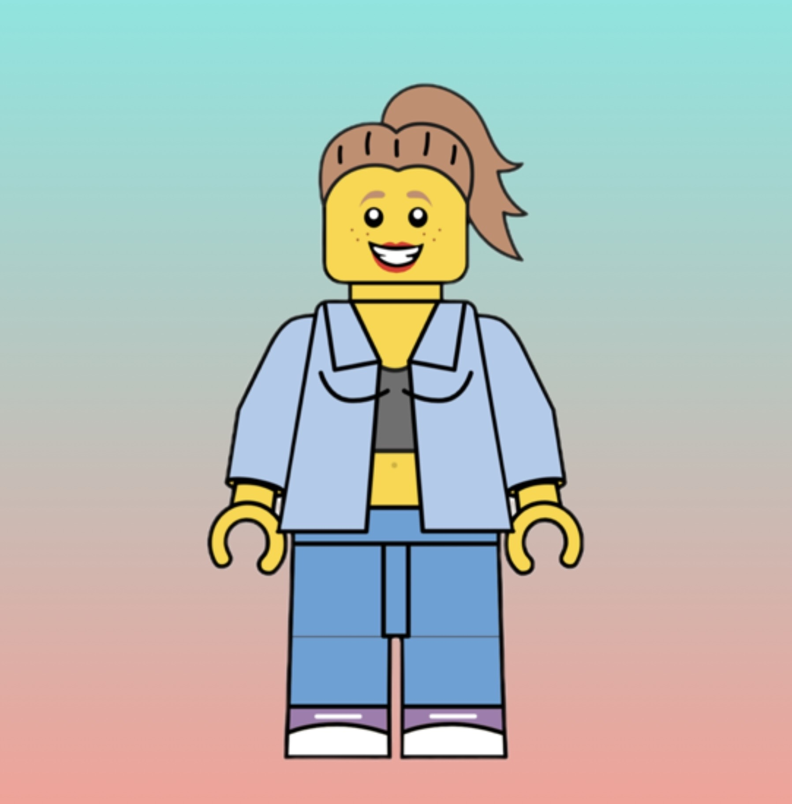
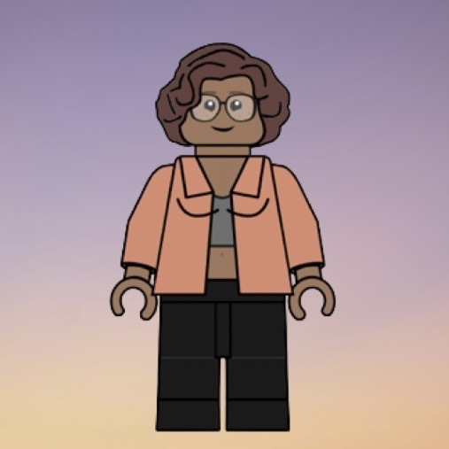

«Si quieres ir rápido, ve sola. Si quieres llegar lejos, ve acompañada.»
Equipo
"Somos un equipo dinámico y apasionado formado por cinco mujeres con un objetivo: crear una página de presentación
que destaque y demuestre los conocimientos adquiridos hasta ahora en maquetación. Gracias a la diversidad de
habilidades y la trayectoria de cada una, hemos conseguido abordar este desafío con creatividad y con una fuerte
ética colaborativa. En nuestro equipo, la sinergia es clave, y cada una de nosotras aporta su energía y dedicación
para lograr llegar a cumplir los objetivos marcados"
Fortalezas
Tenemos backgrounds muy diferentes, lo que nos aporta una visión multidisciplinar.
Nuestro optimismo nos permite convertir los obstáculos en retos y oportunidades de aprendizaje.
Creemos en una dinámica de equipo colaborativa, tolerante y flexible.
Objetivos
Queremos crear productos digitales accesibles y sólidos. Colaborar en comunidades tech bajo los valores Agile. Nuestro objetivo final es hacernos un hueco en el sector digital asumiendo el reto de la formación continua que requiere este mundo.
quiénes somos
Tamara Weibel Weibel
Técnico de sonido y Licenciada en Comunicación audiovisual, tras muchos años dedicados a la ficción televisiva y los directos deportivos he dado el salto a un sector que parece estar en constante movimiento. Me encanta aprender y averiguar como funcionan las cosas y si es en equipo mucho mejor. Las grandes constantes de mi vida son los gatos y mi odio a los madrugones.

Silvia Escanciano Martínez
Graduada en Psicología por la Universidad Autónoma de Madrid,
estoy descubriendo el mundo de la tecnología. Me gustaría
enfocar mi carrera profesional en este sentido y convertirme en desarrolladora frontend.
Me considero una persona inquieta a nivel intelectual, positiva, orientada a
objetivos y con predisposición al trabajo colaborativo.
Laura Sabrina Mellado Sánchez
¡Hola! Soy Laura Sabrina, Técnica Superior en Información y Comercialización Turísticas,
antigua jefa de sala de restaurante e n k l i m a (1 Sol Repsol, Guía Michelin) y ahora estudiante de programación web. Meta: ser full-stack developer. Empática, paciente, perseverante, resolutiva y con una sonrisa siempre por bandera. Deseando aprender y colaborar con esta comunidad tech.

Angela Ávila Lasanta
He dado un emocionante giro en mi carrera profesional proveniente del sector educativo, embarcándome en un nuevo desafío en el mundo del desarrollo web. Mi experiencia en la enseñanza me ha proporcionado habilidades sólidas en la comunicación y la resolución de problemas, cualidades que ahora aplico en el ámbito del desarrollo web. Estoy entusiasmada por aprender y contribuir al campo de la tecnología, explorando nuevas posibilidades y creando soluciones innovadoras. ¡Conéctate conmigo para intercambiar ideas y experiencias!

Naidaly Ruiz Perez
Amante del aprendizaje con bagaje en el sector social, específicamente en la resolución de conflictos y mediación con colectivos de alta vulnerabilidad.
Por lo aprendido de mi background profesionales destaco mis habilidades de proactividad, trabajo en equipo, fácil adaptación a los cambios y comunicación asertiva.
El constante crecimiento del sector tecnológico y las diversas áreas en las que se encuentra me motiva por convertirme en programadora y poder aportar así mi granito de arena.
Deseo poder trabajar en entornos de buenas vibraciones con los cuales me sienta retada intelectualmente y así poder aportar el máximo.
¡Be water my friend!